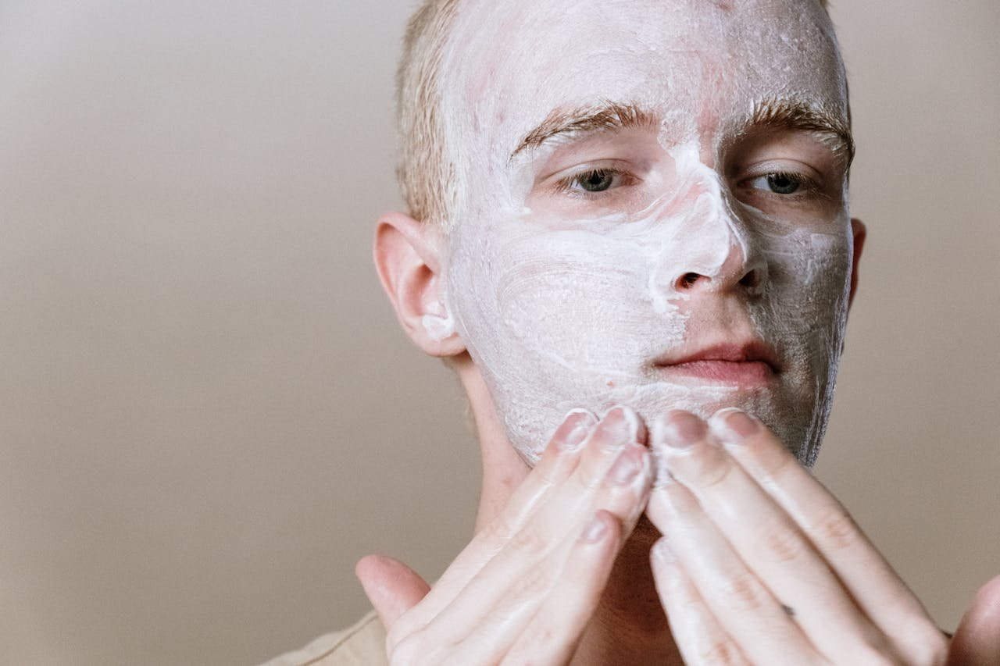

DIY Acne Facial

Hadiyah Daché, licensed cosmetologist & esthetician
Acne
4 min
← All articlesThe Book →Friendly reminder: this post contains affiliate links, which help support the Glowdega Archive. If you buy through them, I may earn a commission at no extra cost to you.
You’ve learned that you need to acne facials to help keep your skin clear and glowing. But… in this economy? Getting those monthly or bi-weekly acne facial treatments feel more luxury than essential. So you’ve searched the internet looking for tips and tricks on how to DIY an acne facial at home and landed on this page. Luckily, you’ve come to the right place! Not only are we acne experts who get our clients clear in under 90 days, we were also on the inaugural ambassador team for Face Reality—the biggest professional acne line! This post will walk you through how to give yourself an elite acne facial treatment at home.
Step 1: Pre-Cleanse
You want to start your facial with a pre-cleanse that helps condition the skin and remove the initial layer of oils that may be present from sunscreen, moisturizers, and environmental pollution. Your pre-cleanse should be oil-based. This means it can be an oil, balm, cream, milk or even a “cleansing lotion”. We recommend the Barrier Balance Creamy Cleanser or our Anointed Cleansing Oil (add yourself to our mailing list for updates on that release).
You’ll want to gently massage the pre-cleanser into your skin for at least one minute. Then you’ll want to wet your fingertips and massage for another minute to fully emulsify the cleanser. To remove, use a warm washcloth to wipe the cleanser away. Your washcloth will likely be filthy and that’s a sign that your cleanser did its job!
Step 2: Acne Cleanse
The type of cleanser you use for this step will depend on the type of acne you have. If it is more mild-moderate, then you can use our Empower Wash. It is a gentle cleanser with 5% l-mandelic acid concentration. You can massage this into the skin for one minute and then rinse away. Pat dry to remove excess.
If your acne is more severe and cystic, you’ll want to use a benzoyl peroxide cleanser. We generally recommend starting out with a 5% benzoyl peroxide cleanser but there are a few 10% concentrations out there that are helpful—just not the PanOxyl. While we love PanOxyl 10% on the body, we’ve seen it wreak enough havoc on faces to know not to recommend it. You’ll apply your benzoyl peroxide cleanser on the skin in a thin layer, like a mask. Leave this on your skin for no more than 10 minutes. You can hop in the shower while you wait. After 10 minutes, use wet hands to create a lather before rinsing away.
IMPORTANT: not everyone can tolerate benzoyl peroxide. If that is you, use a sulfur cleanser instead.
Step 3: Exfoliate
Technically, your acne cleanser is exfoliating but you need a targeted exfoliant for this step. A gentle enzyme mask is great here. There are so many to choose from but the Cannuka Glow Enzyme Mask is really good for acne-prone skin. If you can’t get your hands on that one or if it is out of your budget, we think it’s best to stick with the basic pineapple or papaya ones. Pumpkin enzymes are really popular but they can be too strong (especially in an acne facial treatment).
You will want to leave your enzyme mask on for 10 minutes. To remove, use a warm washcloth and wipe away. You can rinse off any excess and pat dry before moving on to the next step.
Step 4: Spot Treat
Usually, after step 3 you’ll start noticing some of your pimples popping on their own and some of the serous fluid leaking. If you have blackheads, you may have noticed more of them on your washcloth when you wiped away the enzyme mask. This is the step where you treat those individual breakouts.
Sulfur is a very popular spot treatment that can be applied over your breakouts. For blackheads, a salicylic acid based treatment works best. Use a q-tip for the best precision application. Do not remove any of your spot treatment.
Step 5: Mask
Here’s where you can apply either an acne treatment mask or a hydrating mask. We prefer you stick with something more hydrating (the HydraCalm mask from Face Reality is great). If you want something more acne-focused a sulfur mask usually does the trick.
Leave the mask on for 10 minutes. To remove, use a warm washcloth to wipe away and rinse to remove excess. Depending on the mask type, you may want to take a small amount of your gentle cleanser to help remove. Pat dry before moving on to the next step.
Step 6: Repair
Once your skin is dry, you want to use a high frequency device. The AknoEvit device from Zemits is a super easy to use cordless handheld high frequency device. This will help kill any remaining acne bacteria on contact and calm inflammation. You can use code FAIRYGLOWMOTHER to save on the device.
This step is where you would use your regular acne treatment serums. We recommend the Majestic Acne Serum, of course. Just 1-2 pumps is all that is needed to cover the face. Gently pat into the skin. Follow it with Barrier Brew to restore hydration and help with acne healing. Lastly, use an acne-safe moisturizer to seal everything in.
Congratulations! You’ve just completed your DIY acne facial at home. This won’t give you the gorgeous Glowdega glow but it’s a great start. And whenever you’re ready to evict your acne for good, we’re here. We offer memberships that provide the best acne facial prices in the entire Bay Area. You can come once a month for $165 or twice monthly if you’re a part of our acne program for $275. Check our membership page for more details and reach out if you have any questions.